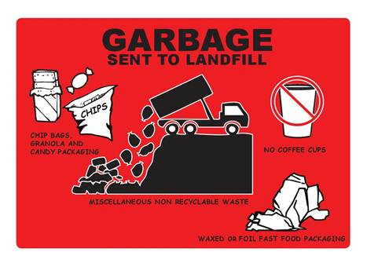
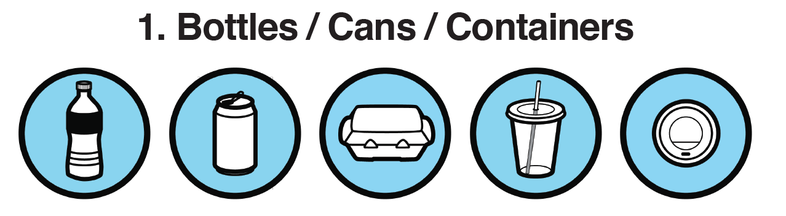

<!DOCTYPE html>
<html>
  <head>
    <title>Mouse-Tracking</title>
    <script src="jspsych-6.0.1/jspsych.js"></script>
    <script src="jspsych-6.0.1/plugins/jspsych-html-keyboard-response.js"></script>
    <script src="jspsych-6.0.1/plugins/jspsych-aaron-response.js"></script>
    <link rel="stylesheet" href="jspsych-6.0.1/css/aaron.css"></link>
  </head>
  <body></body>
  <script>

    /* create timeline */
    var timeline = [];

    /* define welcome message trial */
    var welcome_block = {
      type: "html-keyboard-response",
      stimulus: "Welcome to the experiment. Press f or j to begin.",
      choices: ['f', 'j']
    };
    timeline.push(welcome_block);

    /* define instructions trial */
    var instructions = {
      type: "html-keyboard-response",
      stimulus: "<p>In this experiment, a circle will appear in the center " +
          "of the screen.</p><p>If the circle is <strong>blue</strong>, " +
          "press the letter F on the keyboard as fast as you can.</p>" +
          "<p>If the circle is <strong>orange</strong>, press the letter J " +
          "as fast as you can.</p>" +
          "<div style='float: left;'></img>" +
          "<p class='small'><strong>Press the F key</strong></p></div>" +
          "<div class='float: right;'></img>" +
          "<p class='small'><strong>Press the J key</strong></p></div>" +
          "<p>Press f or j to begin.</p>",
      choices: ['f', 'j']
      // post_trial_gap: 2000
    };
    timeline.push(instructions);

    /* test trials */

    // Answers
    let left = 'left_label_div';
    let right = 'right_label_div';

    var test_stimuli = [
      { label_left: "img/e1.png", label_right: "img/u1.jpg", target_item: "img/blue.png", 
        data: { test_part: 'test', correct_response: left}},
      { label_left: "img/e2.png", label_right: "img/u2.jpg", target_item: "img/orange.png", 
        data: { test_part: 'test', correct_response: right}}
    ];

    var fixation = {
      type: 'html-keyboard-response',
      stimulus: '<div style="font-size:60px;">+</div>',
      choices: jsPsych.NO_KEYS,
      trial_duration: function(){
        return 0; //jsPsych.randomization.sampleWithoutReplacement([250, 500, 750, 1000, 1250, 1500, 1750, 2000], 1)[0];
      },
      data: {test_part: 'fixation'}
    }

    var test = {
      type: "aaron-response",
      label_left: jsPsych.timelineVariable('label_left'),
      label_right: jsPsych.timelineVariable('label_right'), 
      target_item: jsPsych.timelineVariable('target_item'),
      data: jsPsych.timelineVariable('data'),
      on_finish: function(data) {  
        data.correct = (data.response == data.correct_response);
      },
    }

    var test_procedure = {
      timeline: [fixation, test],
      timeline_variables: test_stimuli,
      repetitions: 2,
      randomize_order: true
    }
    timeline.push(test_procedure);


    /* define debrief */

    var debrief_block = {
      type: "html-keyboard-response",
      stimulus: function() {

        var trials = jsPsych.data.get().filter({test_part: 'test'});
        var correct_trials = trials.filter({correct: true});
        var accuracy = Math.round(correct_trials.count() / trials.count() * 100);
        var rt = Math.round(correct_trials.select('rt').mean());

        return "<p>You responded correctly on "+accuracy+"% of the trials.</p>"+
        "<p>Your average response time was "+rt+"ms.</p>"+
        "<p>Press any key to complete the experiment. Thank you!</p>";

      }
    };
    timeline.push(debrief_block);

    /* start the experiment */
    jsPsych.init({
      timeline: timeline,
      on_finish: function() {
        // jsPsych.data.addDataToLastTrial({interactions: interactions});
        jsPsych.data.displayData();
      }
    });
  </script>
</html>
